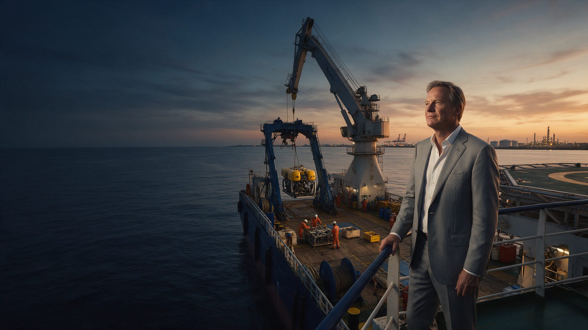
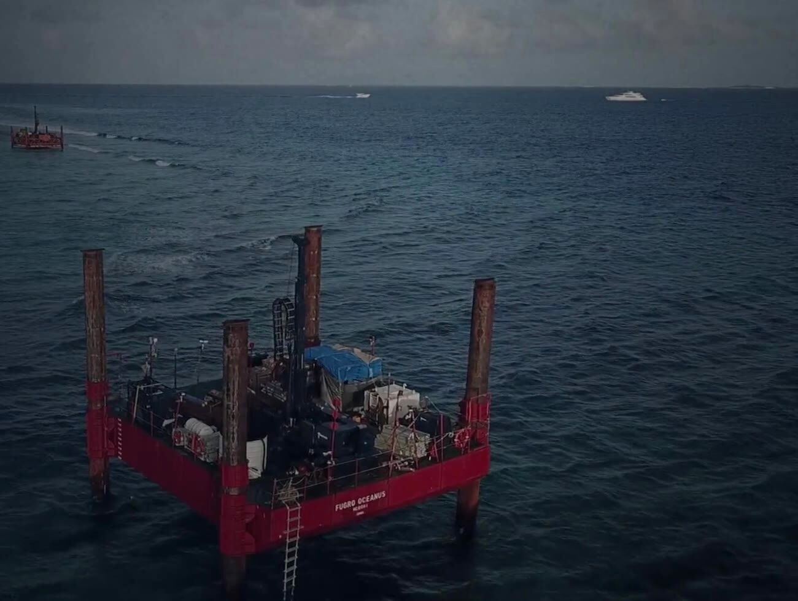

You are too far from the opportunity.
By the time you hear about the tender, the local players are already moving. We bring you timely, qualified opportunities where your capability actually fits.

For international contractors
We bring you the opportunities and build a compliant route to pursue them.
By the time you hear about the tender, the local players are already moving. We bring you timely, qualified opportunities where your capability actually fits.
A weak partner can kill the bid, the margin or the execution. We help you find a local company that can actually play its part.
In most West African markets, you need the right local structure to access opportunities. We help you put together the right setup, with the right local partner, to pursue the opportunity.
Côte d'Ivoire: local content rules give first preference to companies at least 51% Ivorian-owned. Being from ECOWAS is not enough.
Not every tender, not every opportunity deserves a bid. We filter the noise and focus on real opportunities worth your time and investment.
You do not need more leads. You need a clear route to the right deals.
Where could your capability win next?
How it works
Tell us where you are strong and what kind of contracts make sense for you.
A real opportunity matched to your capability.
Local partner, structure, bid, negotiation.
Frequently asked questions
In most cases, yes. The 2022 local content law gives preference to Ivorian companies, defined as at least 51% owned by Ivorian nationals, and requires local personnel at all levels. A compliant partnership is usually the way to compete.
On what the company can actually deliver: people, equipment, past work and its ability to play its role in the bid. We qualify before any introduction.
That is set in the partnership: roles, responsibilities and commercial terms are agreed before the bid. Our job is to build a set-up that is compliant and workable for both sides.
Côte d'Ivoire first, as well as Togo and the wider West African market.
Confidential by default: no opportunity or counterparty is disclosed before confidentiality and non-circumvention terms are signed.

When the right deal appears, we want to know who to call.